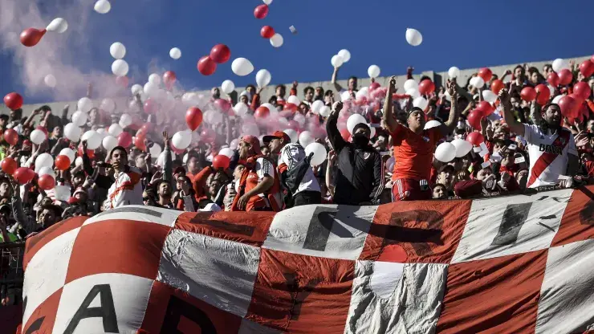
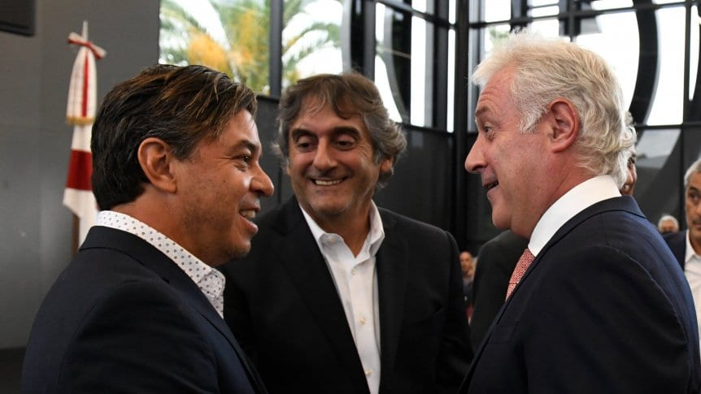
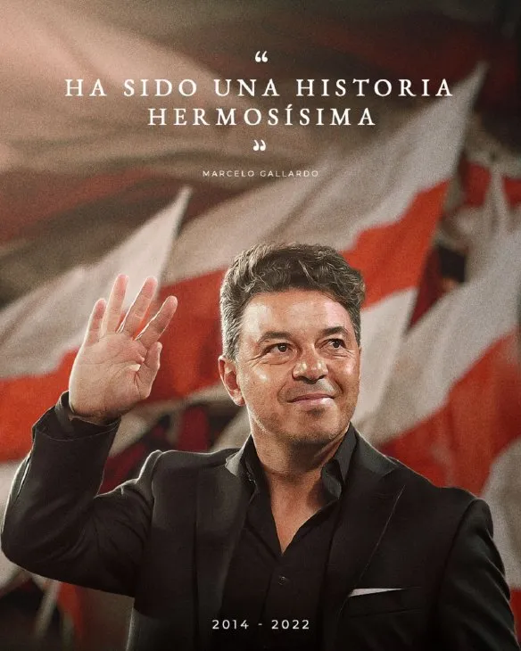

River gano 1-0 a Boca sobre el final // hacer un _blanck en cada noticia

En un partido lleno de roces, el Millonario festejó por 1-0 con un gol agónico de Borja tras una falta muy discutible y hubo batalla campal en el cierre: el ganador terminó con diez y el Xeneize con ocho.
Saca tu entrada para River - Boca // aca hacer un link para que vayan a hacerse socios
Los hinchas de River aguardan con enorme expectativa la venta de localidades para el River-Boca del próximo 7 de mayo. Aquí te contamos cómo tenés que hacer para presenciar el superclásico.
Siguen las renovaciones en el Monumental

Un año después de finalizada la primera etapa de las remodelaciones -que comenzó a mediados agosto de 2020 y culminó seis meses después, en febrero de 2021-, el 7 de febrero de 2022 la dirigencia del Millonario lanzó oficialmente el proyecto para terminar el nuevo Monumental.
Martín Demichelis fue oficializado como nuevo DT de River

El exdefensor, iniciado en la institución de Nuñez, dejó su trabajo como entrenador de las divisiones formativas del Bayern Munich para convertirse en el sucesor de Marcelo Gallardo.
River, en busca de un nuevo DT

El vicepresidente del Millonario se refirió a quién será el encargado de seleccionar al entrenador que sucederá a Gallardo e hizo hincapié en la "obligación" de seguir su legado. Además, mencionó que Ponzio "ya está ayudando en algunas cuestiones".
Gallardo anuncia su retiro luego de 8 años en la institución
Marcelo Gallardo, el técnico más ganador en la historia de River Plate, anunció el jueves que después de ocho años dejará el cargo en diciembre cuando concluya su contrato